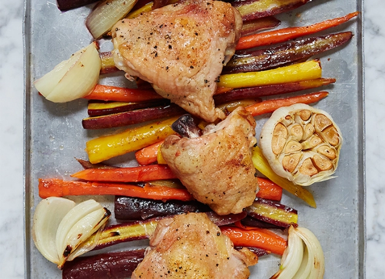

One-Pan Roasted Chicken with Carrots

Description
What's the worst part of cooking dinner? The clean-up, of course. That's why we're obsessed with this one-pan roasted chicken and carrots recipe. Cook it all at once on a sheet pan, enjoy dinner (without a pile of pots and pans in the sink).
Ingredients
- 4 chicken thighs
- 1½ pounds carrots, peeled and trimmed
- 1 large onion, peeled and cut into eighths
- 1 head of garlic
- 4 tablespoons olive oil
- 1 tablespoon chopped fresh rosemary
- Kosher salt and freshly ground black pepper, to taste
Directions
- Preheat the oven to 425°F.
- Arrange the carrots and onion in a single layer on a greased baking sheet.
- Slice the top off a head of garlic; discard the top and place on the tray.
- Drizzle 2 tablespoons of olive oil over the vegetables; season with the rosemary, and salt and pepper.
- Top with the chicken thighs. Rub each thigh with 1 teaspoon olive oil; season with salt and pepper.
- Roast in the oven until the chicken skin is golden and the carrots are tender, 15 to 20 minutes.
- To serve, divide the vegetables and chicken thighs among four plates.